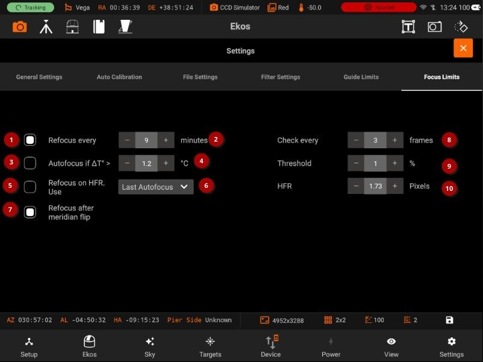

Focus
Focus limits

Focus limits settings are applicable to all the images in the sequence queue. When a limit is exceeded, Ekos shall command the appropriate action to remedy the situation as explained below:
- Refocus every: Check to force an Autofocus every N minutes. Timer is reset at each Autofocus.
- Refocus value in minutes
- Autofocus: Check to force an Autofocus when the change in temperature since last focus exceeded this value. Reference temperature is reset at each Autofocus.
- Autofocus value in Celsius
- Refocus on HFR: Check to perform an HFR Check between Subframes. The Check may result in an Autofocus.
- Algorithm: The HFR Check algorithm:
- Last Autofocus: This is the default algorithm and uses the HFR value from the most recent Autofocus run as the reference for the check.
- Fixed: This algorithm lets the user specify a fixed HFR to use in the check.
- Relative Measure: This algorithm collects datapoints from Autofocus and HFR Checks, maintains the data in a sequenced list and uses the median value as the reference for the next HFR Check.
- Refocus meridian flip: Check to force an Autofocus after a Meridian Flip.
- Check every frames: Run HFR check after this many sub-frames.
- Threshold: Specify the % to apply to the HFR Check value appropriate to the selected algorithm, to use as the threshold to perform the HFR Check.
- HFR: The HFR Check value in pixels. This is an output field when Last Autofocus or Relative Measure is selected, and an input field for Fixed. In all cases, the user can override the system generated value.